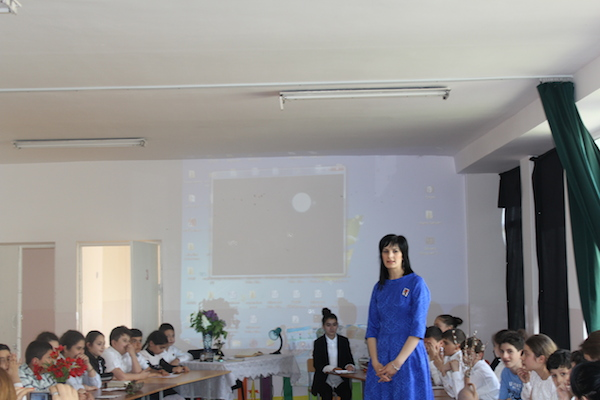
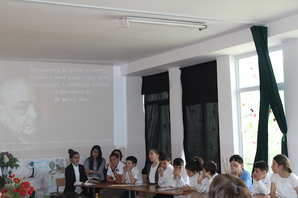
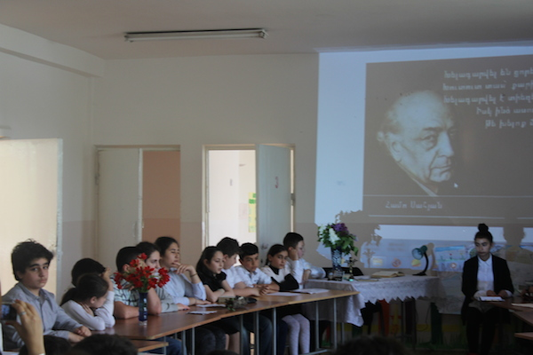
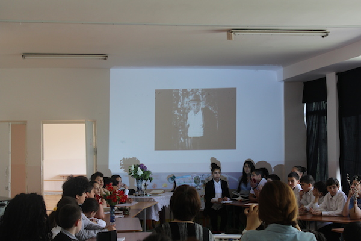
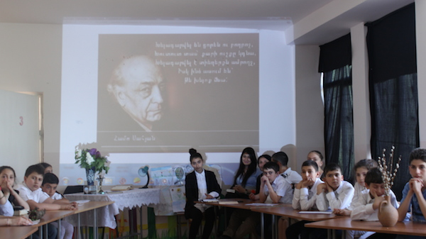
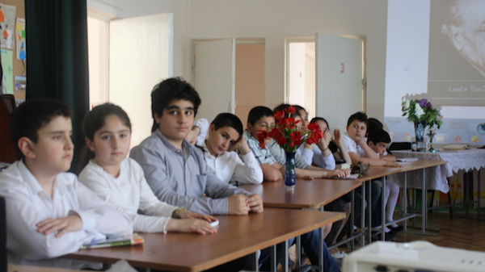

Եթե մինչև անգամ
Լսած լինես, թե ես այս աշխարհում չկամ,
Միևնույն է, կգամ, ինչ էլ լինի, կգամ,
Ուր էլ լինեմ, կգամ:
Եթե մինչև անգամ ես կուրացած լինեմ,
Եթե մինչև անգամ լույսդ մարած լինի,
Վերջին հույսդ քամին առած-տարած լինի,
Առանց լույսի կգամ, ես այս անգամ կգամ
Մենության մեջ լացող երգիդ վրա:
….և այսպես «Բյուրակն» կրթահամալիրում տոն էր. «նա եկել էր»: Եկել էր կրթահամալիրի սաների շուրթերով հնչած իր անզուգական բանաստեղծություններով հիացնելու ու երանություն պարգևելու ունկնդիրներին: «Բյուրակնում» իսկական տոն էր` անտիպ բանաստեղծությունների ու գեղեցիկ ասմուքի տոն’ նվիրված մեծն բանաստեղծ Համո Սահյանի 100-ամյակին: Սահյանական այս միջոցառմանը մասնակցում էին կրթահամալիրի թե տարրական, թե միջին ու ավագ դպրոցի սաները: Աշակերտների հետ միասին Սահյանի բանաստեղծությունները ասմունքեցին նաև ուսուցիչները: Տպավորությունն աննկարագրելի էր, հուզիչ, անչափ գերող…տարբեր տարիքի աշակերտներն ու ուսուցիչները կարծես մեկ ներդաշնակ ամբողջություն լինեին’ միավորված սահյանական հոգեզմյալ պոեզիայի ելևէջների ներքո: Նրանցից յուրաքանչյուրի ասմունքը անցնում էր մյուսի, մնացածի, բոլոր ունկնդիրների էությամբ և նրանց հոգին լցնում նուրբ ու վսեմ զգացմունքներով: Եվ այնպես էիր ուզում, որ անվերջ շարունակվեր հրաշքը, որ կոչվում է սահյանական պոեզիա…
- 
- 
- 
- 
- 
- 